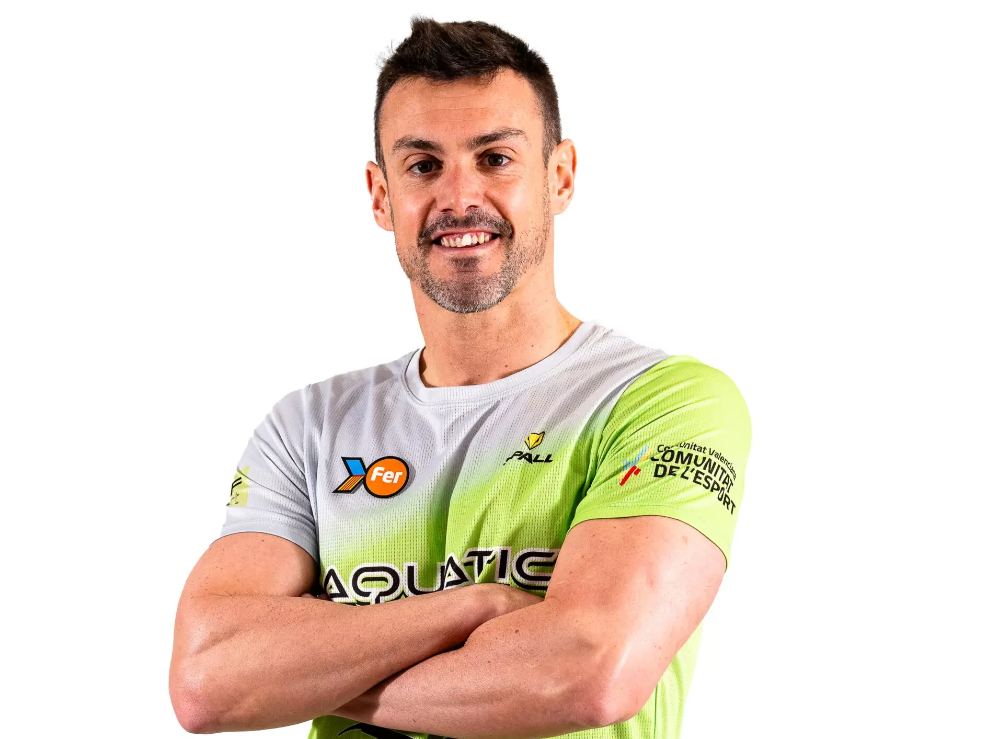

José Antonio Marí
"Jose Mari"
Especialidad: Natación adaptada - Libre y Mariposa
Edad: 36 años
Club: CD Aquatic Campanar

Biografía
Jose es un nadador paralímpico español nacido el 23 de octubre de 1988 en Valencia. Compite en la categoría S9, destinada a deportistas con discapacidad física moderada, y es reconocido por su extensa y exitosa trayectoria en la natación adaptada.
Logros Deportivos
- Ha representado a España en cinco ediciones consecutivas de los Juegos Paralímpicos
- 🥉 50 metros libre S9 Londres 2012
- 🥉 4x100 estilos mixto Paris 2024